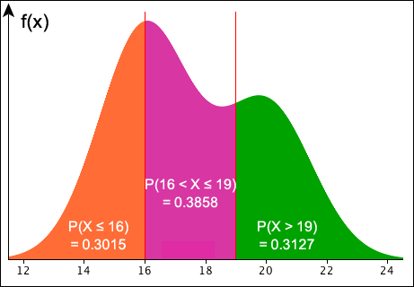
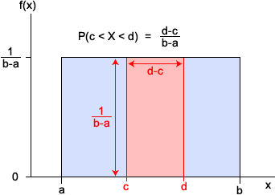
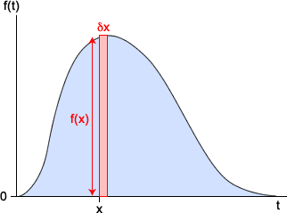
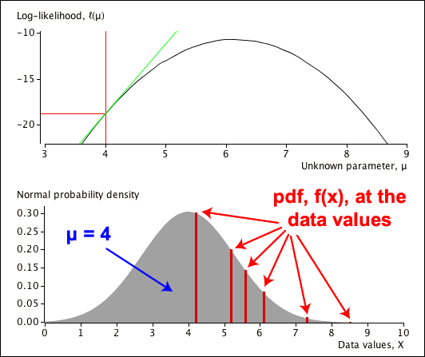
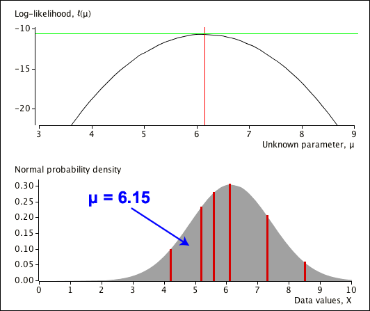
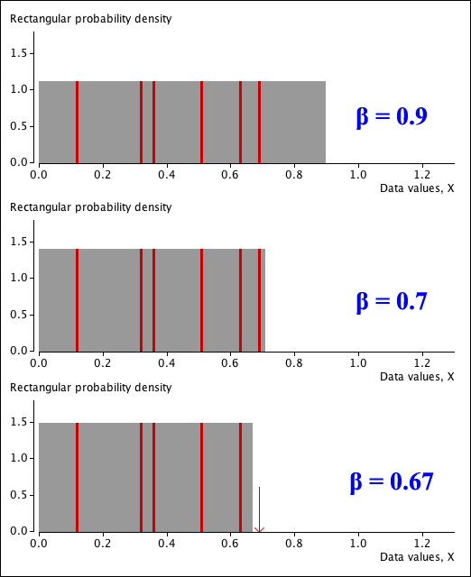
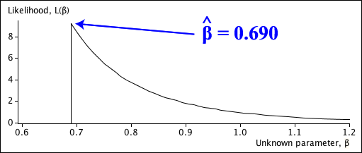

If you don't want to print now,
Probabilities as areas
The distributions of a continuous random variable is defined by a type of histogram called a probability density function (pdf), with the following properties
Based on the properties of histograms, the probability of a value between any two constants is the area under the pdf above this range of values.

Probabilities by integration
Since probability density functions can usually be expressed as simple mathematical functions, these areas can be found as integrals,
\[ P(a \lt X \lt b) \;\; = \; \; \int_a^b {f(x)}\; dx \]Properties of a probability density function
A function \(f(x)\) can be the probability density function of a continuous random variable if and only if
\[ f(x) \;\; \ge \; \; 0 \quad\quad \text{for all } x \text{, and} \] \[ \int_{-\infty}^{\infty} {f(x)}\; dx \;\; = \; \; 1 \](Proved in full version)
The simplest kind of continuous distribution is a rectangular distribution (also called a continuous uniform distribution).
Definition
A random variable, \(X\), is said to have a rectangular distribution with parameters \(a\) and \(b\)
\[ X \;\; \sim \; \; \RectDistn(a, b) \]if its probability density function is
\[ f(x) = \begin{cases} \frac {\large 1} {\large b-a} & \text{for } a \lt x \lt b \\[0.2em] 0 & \text{otherwise} \end{cases} \]Probabilities for rectangular random variables can be easily found using geometry.

Equivalently, using integration,
\[ \begin{align} P(c \lt X \lt d) \;\; &= \; \; \int_c^d {f(x)}\; dx \\ &= \; \; \int_c^d {\frac 1 {b-a}}\; dx \\ &=\;\; \frac {d-c} {b-a} \end{align} \]Example
If \(X \;\; \sim \; \; \RectDistn(0, 10)\),
\[ P(4 \lt X \lt 7) \;\;=\;\; \frac {7-4} {10-0} \;\;=\;\; 0.3 \]In the next two examples, integration is used to find probabilities.
Question
If a continuous random variable, \(X\), has probability density function
\[ f(x) = \begin{cases} 1 - \dfrac x 2 & \quad \text{for } 0 \lt x \lt 2 \\[0.2em] 0 & \quad \text{otherwise} \end{cases} \]what is the probability of getting a value less than 1?
(Solved in full version)
The next example involves a distribution called an exponential distribution; practical applications of this distribution will be described in the next chapter.
Question
If a continuous random variable, \(X\), has probability density function
\[ f(x) = \begin{cases} 4\;e^{-4x} & \quad \text{for } x \ge 0\\[0.2em] 0 & \quad \text{otherwise} \end{cases} \]what is the probability of getting a value less than 1?
(Solved in full version)
The cumulative distribution function has the same definition for a continuous random variable as for a discrete one.
Definition
The cumulative distribution function (CDF) for a continuous random variable \(X\) is the function
\[F(x) \;=\; P(X \le x)\]This probability can be expressed as an integral,
\[F(x) \;\; = \; \; \int_{-\infty}^x f(t)\;dt\]Note that this also implies that
\[f(x) \;\; = \; \; \frac {d}{dx} F(x)\]All cumulative distribution functions monotonically rises from zero to one. However whereas a discrete distribution's CDF is a step function, that of a continuous distribution is a smooth function.
Question: Rectangular distribution
Sketch the cumulative distribution function of a random variable with a rectangular distribution, \(X \sim \RectDistn(1, 5)\).
Question: Exponential distribution
If \(X\) has probability density function
\[ f(x) = \begin{cases} 4\;e^{-4x} & \quad \text{for } x \ge 0\\[0.2em] 0 & \quad \text{otherwise} \end{cases} \]what is its cumulative distribution function?
(Both solved in full version)
A cumulative probability, \(P(X \le x)\), can be found by integration. It is sometimes useful to work in the opposite direction — given a cumulative probability, what is the corresponding value of \(x\)?
Definition
The \(p\)'th quantile of a continuous distribution is the value, \(x\), such that
\[ P(X \le x) \;\; = \; \; p \]When \(p\) is expressed as a percentage, the value is called the \(100p\)'th percentile.
Definition
These three values split the probability density function into four equal areas.
Question
What are the median and quartiles of the \(\RectDistn(1, 5)\) distribution?
(Solved in full version)
The next example is a little harder.
Question
Find a formula for the \(p\)'th quantile of the exponential distribution with probability density function
\[ f(x) = \begin{cases} 4\;e^{-4x} & \text{for } x \ge 0\\[0.2em] 0 & \text{otherwise} \end{cases} \](Solved in full version)
For an infinitesimally small interval of width \(\delta x\),
\[ P(x \lt X \lt x+\delta x) \;\approx\; f(x) \times \delta x\]
If the whole range of possible x-values is split into such slices, the definition of an expected value for a discrete random variables would give
\[ E[X] \;\approx\; \sum {x \times f(x) \; \delta x}\]In the limit, this summation becomes an integral, giving us the following definition.
Definition
The expected value of a continuous random variable with probability density function \(f(x)\) is
\[ E[X] \;=\; \int_{-\infty}^{\infty} {x \times f(x) \; d x}\]This can be generalised:
Definition
If \(X\) is a continuous random variable with probability density function \(f(x)\), the expected value of any function \(g(X)\) is
\[ E\big[g(X)\big] \;=\; \int_{-\infty}^{\infty} {g(x) \times f(x) \; d x}\]We define the mean and variance of a continuous distribution in a similar way to those of a discrete distribution.
Definition
The mean of a continuous random variable is
\[ E[X] \;=\; \mu \]and its variance is
\[ \Var(X) \;=\; \sigma^2 \;=\; E \left[(X - \mu)^2 \right] \]Their interpretations are also similar.
The following result is often useful for evaluating a continuous distribution's variance.
Alternative formula for the variance
A continuous random variable's variance can be written as
\[ \Var (X) \;=\; E \left[(X - \mu)^2 \right] \;=\; E[X^2] - \left( E[X] \right)^2 \]In the next example, you should find the mean and variance of the distribution by integration.
Question
What are the mean and variance of the \(\RectDistn(a, b)\) distribution?
(Solved in full version)
The same definition of independence holds for both discrete and continuous random variables.
Definition
Two random variables, \(X\) and \(Y\), are independent if all events about the value of \(X\) are independent of all events about the value of \(Y\).
Independence of continuous random variables is usually deduced from the way that the variables are measured rather than from mathematical calculations. For example,
Characterisation of independence
For independent continuous random variables, \(X\) and \(Y\),
\[ \begin{align} P(x \lt X \lt x+\delta x &\textbf{ and } y \lt Y \lt y+\delta y) \\ &=\;\; P(x \lt X \lt x+\delta x) \times P(y \lt Y \lt y+\delta y) \\ &\approx\;\; f_X(x)\;f_Y(y) \times \delta x \; \delta y \end{align} \]so
\[ P(X \approx x \textbf{ and } Y \approx y) \;\; \propto \;\; f_X(x)\;f_Y(y) \]This is closely related to the corresponding result for two independent discrete random variables,
\[ P(X=x \textbf{ and } Y=y) \;\;=\;\; p_X(x) \times p_Y(y) \]Random samples
A collection of \(n\) independent identically distributed random variables from the same distribution is called a random sample.
Extending our earlier characterisation of independence of two continuous random variables,
\[ P(X_1 \approx x_1, X_2 \approx x_2, ..., X_n \approx x_n) \;\; \propto \;\; \prod_{i=1}^n f(x_i) \]This is again closely related to the corresponding formula for a random sample from a discrete distribution
\[ P(X_1 = x_1, X_2 = x_2, ..., X_n = x_n) \;\; = \;\; \prod_{i=1}^n p(x_i) \]The results that we showed earlier about sums and means of discrete random variables also hold for variables with continuous distributions. We simply repeat them here.
Linear combination of independent variables
If the means of two independent random variables, \(X\) and \(Y\), are \(\mu_X\) and \(\mu_Y\) and their variances are \(\sigma_X^2\) and \(\sigma_Y^2\), then the linear combination \((aX + bY)\) has mean and variance
\[ \begin {align} E[aX + bY] & = a\mu_X + b\mu_Y \\[0.4em] \Var(aX + bY) & = a^2\sigma_X^2 + b^2\sigma_Y^2 \end {align} \]Sum of a random sample
If \(\{X_1, X_2, ..., X_n\}\) is a random sample of n values from any distribution with mean \(\mu\) and variance \(\sigma^2\), then the sum of the values has mean and variance
\[\begin{aligned} E\left[\sum_{i=1}^n {X_i}\right] & \;=\; n\mu \\ \Var\left(\sum_{i=1}^n {X_i}\right) & \;=\; n\sigma^2 \end{aligned} \]Sample mean
If \(\{X_1, X_2, ..., X_n\}\) is a random sample of n values from any distribution with mean \(\mu\) and variance \(\sigma^2\), then the sample mean has a distribution with mean and variance
\[\begin{aligned} E\big[\overline{X}\big] & \;=\; \mu \\ \Var\big(\overline{X}\big) & \;=\; \frac {\sigma^2} n \end{aligned} \]Central Limit Theorem (informal)
If \(\{X_1, X_2, ..., X_n\}\) is a random sample of n values from any distribution with mean \(\mu\) and variance \(\sigma^2\),
\[\begin{aligned} \sum_{i=1}^n {X_i} & \;\; \xrightarrow[n \rightarrow \infty]{} \;\; \NormalDistn(n\mu, \;\;\sigma_{\Sigma X}^2=n\sigma^2) \\ \overline{X} & \;\; \xrightarrow[n \rightarrow \infty]{} \; \; \NormalDistn(\mu, \;\;\sigma_{\overline X}^2 = \frac {\sigma^2} n) \end{aligned} \]Many continuous distributions have one or more parameters whose values are unknown. An unknown parameter, \(\theta\), is often estimated from a random sample of \(n\) values from the distribution,
\[ \hat{\theta} \;\; =\;\; \hat{\theta}(X_1, X_2, \dots, X_n) \]As when estimating parameters of discrete distributions, the concepts of bias and standard error are important ways to differentiate a good estimator from a bad one. The definitions of these quantities are the same for both discrete and continuous distributions; we repeat them here.
Bias
The bias of an estimator \(\hat{\theta}\) of a parameter \(\theta\) is
\[ \Bias(\hat{\theta}) \;=\; E\big[\hat{\theta}\big] - \theta \]If its bias is zero, \(\hat{\theta}\) is called an unbiased estimator of \(\theta\).
Standard error
The standard error of an estimator \(\hat{\theta}\) is its standard deviation.
Bias and standard error can again be combined into a single value.
Mean squared error
The mean squared error of an estimator \(\hat{\theta}\) of a parameter \(\theta\) is
\[ \MSE(\hat{\theta})\; =\; E\left[ (\hat{\theta} - \theta)^2 \right] \;=\; \Var(\hat{\theta}) + \Bias(\hat{\theta})^2 \]A further characteristic of estimators also applies to continuous distributions.
Consistency
An estimator \(\hat{\theta}(X_1, X_2, \dots, X_n)\) is a consistent estimator of \(\theta\) if
\[ \begin{align} \Var(\hat{\theta}) \;\; &\xrightarrow[n \rightarrow \infty]{} \;\; 0 \\[0.5em] \Bias(\hat{\theta}) \;\; &\xrightarrow[n \rightarrow \infty]{} \;\; 0 \end{align} \]A simple way to obtain an estimate of a single unknown parameter from a random sample is the method of moments. For both discrete and continuous distributions, it is the parameter value that makes the distribution's mean equal to that of the random sample and is therefore the solution to the equation
\[ E[X] \;\; = \; \; \overline{X} \]German tank problem
Consider a rectangular distribution,
\[ X \;\; \sim \; \; \RectDistn(0, \beta) \]where the upper limit, \(\beta\), is an unknown parameter. The distribution's mean and variance are
\[ E[X] \;\; = \; \; \frac {\beta} 2 \spaced{and} \Var(X) = \frac {\beta^2} {12} \]so the method of moments estimator is
\[ \hat{\beta} \;\;=\;\; 2\overline{X}\]It is unbiased and has standard error
\[ \se(\hat{\beta}) \;\;=\;\; \sqrt{\Var(2\overline{X})} \;\;=\;\; \sqrt{ \frac {4\Var(X)} n } \;\;=\;\; \frac {\beta} {\sqrt{3n}} \]Despite being unbiased, this estimator has one major problem. From the random sample {12,17, 42, 97}, the resulting estimate of \(\beta\) would be
\[ \hat{\beta} \;\;=\;\; 2\overline{X} \;\;=\;\; 84\]yet the maximum of the distribution cannot be 84 since we have already observed one value greater than this.
The method of moments usually gives reasonable parameter estimates, but can sometimes result in estimates that are not feasible.
We defined the likelihood function of a discrete data set to be the probability of obtaining these data values, treated as a function of the unknown parameter, \(\theta\).
\[ L(\theta) \;=\; P(data \;| \; \theta) \]If \(\{x_1, x_2, \dots, x_n\}\) is a random sample from a discrete distribution with probability function \(p(x \mid \theta)\), this is
\[ L(\theta) \;=\; P(X_1 = x_1, X_2 = x_2, ..., X_n = x_n \;| \; \theta) \;\;=\;\; \prod_{i=1}^n {p(x_i \;| \; \theta)} \]For a random sample from a continuous distribution with probability density function \(f(x\;|\; \theta)\),
\[ P(X_1 \approx x_1, X_2 \approx x_2, ..., X_n \approx x_n) \;\; \propto \;\; \prod_{i=1}^n f(x_i) \]so the product of the probability density functions plays the same role for continuous random variables as the product of probability functions for discrete ones.
Definition
If random variables \(\{X_1, X_2, \dots, X_n\}\) are a random sample from a continuous distribution with probability density function \(f(x \;|\; \theta)\), then the function
\[ L(\theta) = \prod_{i=1}^n {f(x_i \;| \; \theta)} \]is called the likelihood function of \(\theta\).
Maximum likelihood estimate
The maximum likelihood estimate of \(\theta\) is again the value for which the observed data are most likely — the value that maximises \(L(\theta)\).
This is usually (but not always) a turning point of the likelihood function and can be found as the solution of the equation
\[ L'(\theta) \;\; =\;\; 0 \]As with discrete distributions, it is usually easier to solve the equivalent equation involving the logarithm of likelihood function
\[ \ell'(\theta) \;\; =\;\; \frac d {d \theta} \log\big(L(\theta)\big) \;\; =\;\; 0 \]Maximum likelihood estimators have the same properties when used with continuous and discrete distributions. We repeat these properties, again in a slightly abbreviated form that is not mathematically rigorous.
Bias
The maximum likelihood estimator, \(\hat {\theta} \), of a parameter, \(\theta\), that is based on a random sample of size \(n\) is asymptotically unbiased,
\[ E[\hat {\theta}] \;\; \xrightarrow[n \rightarrow \infty]{} \;\; \theta \]Asymptotic normality
The maximum likelihood estimator, \(\hat {\theta} \), of a parameter, \(\theta\), that is based on a random sample of size \(n\) asymptotically has a normal distribution,
\[ \hat {\theta} \;\; \xrightarrow[n \rightarrow \infty]{} \;\; \text{a normal distribution} \]Approximate standard error
If \(\hat {\theta} \) is the maximum likelihood estimator of a parameter \(\theta\) based on a large random sample, its standard error can be approximated by:
\[ \se(\hat {\theta}) \;\;\approx\;\; \sqrt {- \frac 1 {\ell''(\hat {\theta})}} \]From these, we can find the approximate bias (zero) and standard error of most maximum likelihood estimators based on large random samples.
If the estimator of any parameter, \(\theta\), is approximately unbiased and normally distributed, and if we can evaluate an approximate standard error, then the interval
\[ \hat{\theta}-1.96 \times \se(\hat {\theta}) \quad \text{ to } \quad \hat{\theta}+1.96 \times \se(\hat {\theta}) \]has approximately probability 0.95 of including the true value of \(\theta\). The resulting interval is a 95% confidence interval for \(\theta\) and we have 95% confidence that it will include the actual value of \(\theta\).
This holds for random samples from both discrete and continuous distributions. In particular, it can be used for maximum likelihood estimators, due to their asymptotic properties.
Other confidence levels
Intervals with different confidence levels can be obtained by replacing "1.96" by other quantiles of the standard normal distribution. For example, a 90% confidence interval for \(\theta\) is
\[ \hat{\theta}-1.645 \times \se(\hat {\theta}) \quad \text{ to } \quad \hat{\theta}+1.645 \times \se(\hat {\theta}) \]This page applies maximum likelihood to a normal distribution.
Normal distribution with known σ
Consider a random sample,
4.2 5.2 5.6 6.1 7.3 8.5
from a normal distribution with known \(\sigma\),
\[ X \;\; \sim \; \; \NormalDistn(\mu, \;\sigma = 1.3) \]Its log-likelihood is
\[ \ell(\mu) \;\;=\;\; \sum_{i=1}^n {\log(f(x_i \;|\; \mu))} \;\;=\;\; -\frac 1 {2 \times 1.3^2} \times \sum_{i=1}^n {(x_i-\mu)^2} + K \]where \(K\) is a constant that does not depend on \(\mu\). To find the maximum likelihood estimate of \(\mu\), we solve
\[ \ell'(\mu) \;\;=\;\; \frac 1 {1.3^2} \times \sum_{i=1}^n {(x_i-\mu)} \;\;=\;\; 0 \]Giving \(\displaystyle \hat{\mu} \;\;=\;\; \frac {\sum {x_i}} n \;\;=\;\; \overline{x}\).
We now illustrate the method graphically. The likelihood function, \(L(\mu)\), is the product of the normal distribution's pdf's at the data values — the product of the bar heights at the bottom of the next diagram.

The likelihood for the normal distribution with \(\mu = 4\) is low because the pdf is so small at the highest data values, f(7.3) and f(8.5). On the other hand, when \(\mu = \overline{x} = 6.15\), there are no small pdfs the likelihood function is maximised.

Standard error
We can directly find the standard error of the MLE using the properties of sample means,
\[ \se(\hat{\mu}) \;\;=\;\; \sqrt{\Var(\overline{X})} \;\;=\;\; \frac {\sigma} {\sqrt{n}} \;\;=\;\; \frac {1.3} {\sqrt n }\]Finding the standard error from the second derivative of \(\ell(\mu)\) gives
\[ \se(\hat {\mu}) \;\;\approx\;\; \sqrt {- \frac 1 {\ell''(\hat {\mu})}} \;\;=\;\; \sqrt {\frac {1.3^2} n}\]For this example, the asymptotic formula gives the exact standard error of the maximum likelihood estimator.
Confidence interval
For this example, the maximum likelihood estimator is the sample mean. Since sample means from normal distributions have exactly normal distributions,
\[ \overline{X} \;\; \sim \; \; \NormalDistn(\mu,\;\; \sigma_{\overline{X}} = \frac {1.3} {\sqrt n}) \]the interval estimate
\[ \overline{x} \;\; \pm \; \; 1.96 \times \frac {1.3} {\sqrt n} \]has exactly 95% confidence level. (The confidence level is only approximate for MLEs based on other distributions.)
Maximum likelihood estimates can usually be found as turning points of the likelihood function (or equivalently the log-likelihood function) — i.e. by solving \(\ell'(\theta) = 0\). However this method does not work in a few examples.
Rectangular distribution
The following six values,
0.12 0.32 0.36 0.51 0.63 0.69
are a random sample from a rectangular distribution,
\[ X \;\; \sim \; \; \RectDistn(0, \;\beta) \]This distribution has likelihood is
\[ L(\beta) \;\;=\;\; \prod_{i=1}^6 {f(x_i \;|\; \beta)} \;\;=\;\; \begin{cases} \left(\dfrac 1 {\beta}\right)^6 &\text{for } \beta \ge \max(x_1, \dots, x_6) \\[0.4em] 0 &\text{otherwise} \end{cases} \]This is illustrated below for a few values of \(\beta\). The red lines give the values of \(f(x \;|\; \beta)\) at the data points; their product gives the likelihood.

When \(\beta\) is less than the maximum data value, 0.690, the pdf at this value is zero, so the likelihood is zero. As \(\beta\) increases above 0.690, the pdfs for all data values decrease, and so does the likelihood. The likelihood function is shown below.

The maximum likelihood estimate is at a discontinuity in the likelihood function not at a turning point, so the MLE cannot be found solving \(\ell'(\beta) = 0\).
Bias and standard error
The 2nd derivative of the log-likelihood function is undefined at the MLE and cannot be used to obtain an approximate standard error. However formulae for its mean and standard deviation can be found from first principles — we will derive them later.
\[ E\left[\hat{\beta}\right] \;=\; \frac n {n+1} \beta \spaced{and} \se\left(\hat{\beta}\right) \;=\; \sqrt {\frac n {(n+1)^2(n+2)}}\times \beta \]The estimator is therefore biased but is consistent since its bias and standard error both tend to zero as \(n \to \infty\).
What you need to know in this chapter
You should concentrate on the following material when studying the chapter about continuous random variables.
5.1 Finding probabilities
For any continuous distribution, you should be able to find probabilities (including cumulative ones) by integration. You should also be able to find any quantile (or at least the equation that must be solved to find it).
The relationship between the pdf and cumulative distribution function through integration and differentiation is also important and will be used later in the e-book.
5.2 Mean and variance
You should be able to find the mean, variance and any other expected value for a continuous random variable (by integration).
5.3 Random samples
The details of this section will not be examined. All you need to know is that the results about sample means and variances for discrete random variables (section 2.3) also hold for continuous variables (page 5.3.2).
5.4 Estimating parameters
In a similar way, this section mainly states that all results and methods given in Chapter 4 for discrete random variables can also be used in the same way for continuous ones. (The continuous distribution's pdf is used in the same way as a discrete distribution's probability function, as justified on page 5.3.1.)
You should now be able to find method of moments and maximum likelihood estimators for continuous distributions that have a single unknown parameter, and find standard errors and confidence intervals when MLE is used. You should also be aware the likelihood cannot always be maximised by differentiating the log-likelihood — page 5.4.7 gives an example.